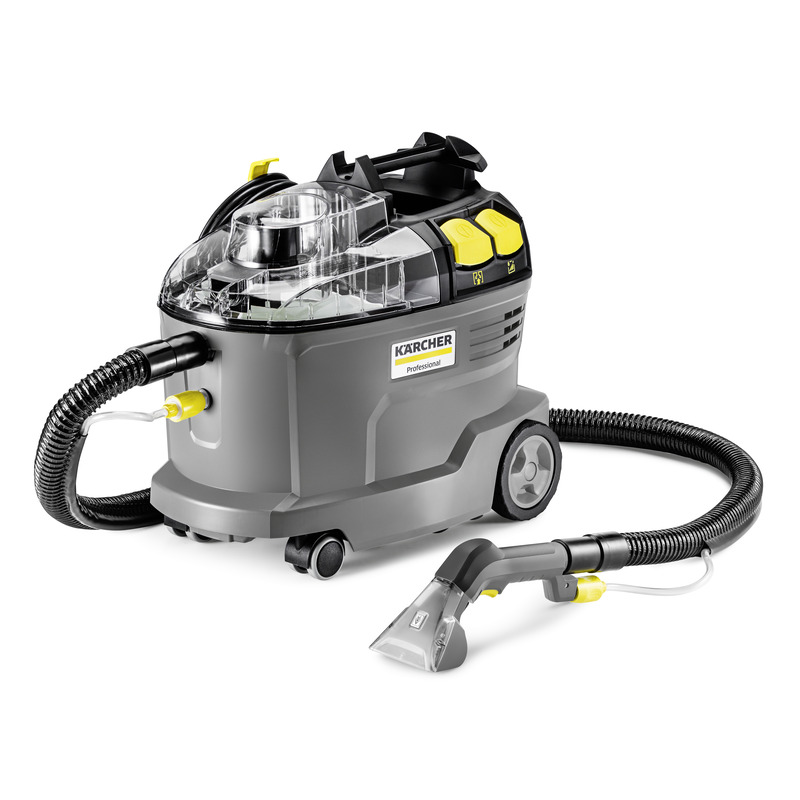

Shampouineuse · Injection / extraction
Kärcher Puzzi 8/1
Machine professionnelle pour laver canapés, fauteuils, moquettes et tapis à Lausanne — sans acheter l’appareil.
| Tarif | À partir de 35 CHF · tarif indicatif (période confirmée à la demande) |
|---|---|
| Unité | Période de location — détail à la confirmation |
| Caution | 100 CHF |
| Paiement | Twint ou espèces à la remise |
| Remise / retour | Lausanne, sur rendez-vous |
| Référence constructeur | 1.100-240.0 |
Source modèle et média : fiche constructeur Kärcher Puzzi 8/1 — réf. 1.100-240.0.
Pour quoi faire
- Canapé, fauteuil, chaise textile
- Moquette et tapis
- Rafraîchissement après saison, déménagement, animal de compagnie (dans le respect des tissus)
Inclus / kit
Kit de base pour injection/extraction textiles, selon configuration remise le jour du rendez-vous. Liste exacte des embouts et flexibles confirmée à la remise.
Prérequis côté locataire
- Prise électrique adaptée, accès à de l’eau pour le plein et le rinçage
- Surface de travail dégagée ; temps de séchage après extraction
- Tester d’abord une zone peu visible du textile
Consignes d’usage
Principe : pulvériser peu, extraire beaucoup, sécher complètement.
- Ne pas détremper le textile.
- Rinçage type : environ 2 L, 1–2 minutes (ordre de grandeur guide client).
- Travailler par zones.
- Laisser sécher à l’air ; aérer la pièce.
- En cas de doute sur un tissu délicat : ne pas forcer, demander avant.
La notice constructeur de l’appareil remis prime sur ce résumé.